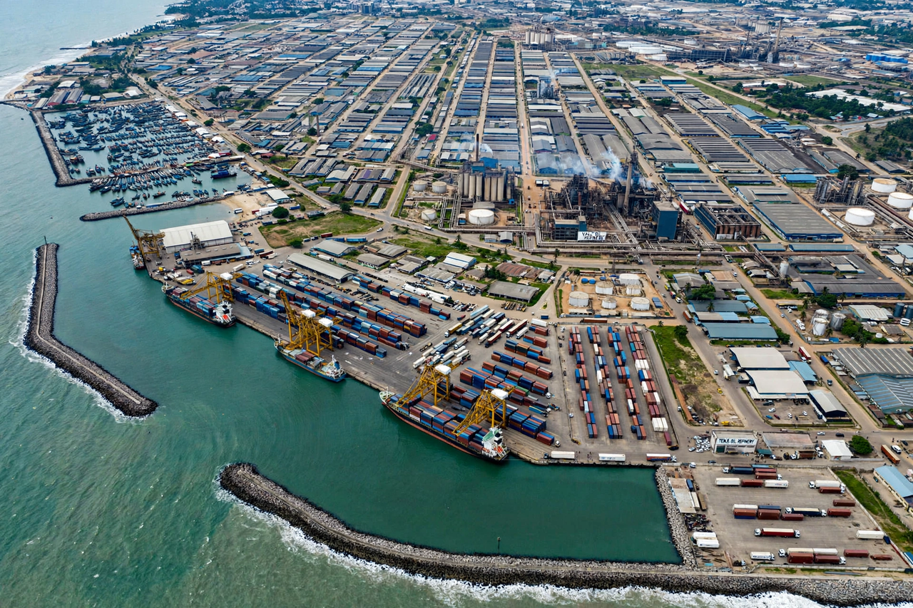

Wikipedia — the free encyclopedia

| Country | Ghana |
| Region | Greater Accra |
| Known for | Ghana's largest deep-water port; the Greenwich Meridian passes nearby |
Tema is a planned industrial and port city on Ghana's Atlantic coast, about 25 km east of Accra. Built from the 1950s under Kwame Nkrumah's industrialisation programme and designed by Constantinos Doxiadis, Tema Harbour (opened 1962) is Ghana's largest seaport. The city hosts an oil refinery, aluminium smelter (VALCO) and manufacturing estates.
Tema is famous for sitting almost exactly on the Greenwich Meridian (longitude 0°), which passes through the city — marked at the Meridian Rock and a Presbyterian church built on the line. The original fishing village was relocated to make way for the port.